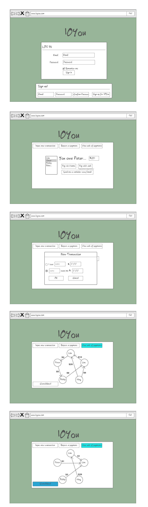

IOyou web application and wireframes
This website was created as an application to calculate and minimze the number of money transfers by consolidating debts within a network of people. Users are able to input new transactions, and then visualize the consolidated money transfers with a "web" graphic.
I created this website as part of the group project for a Web Programming class at Tufts. My primary responsibility was in organizing the layou of the website and working on the front-end component. As each team-member finished their part, I put everything together to make it a working application. We utilized Bootstrap, AngularJS, HTML5/CSS, MongoDB, Javascript, and Jquery. The images below are wireframes I created before building the web application. The final web application prototype is available here , as well as the Github page here. To log in to the web app, you may use the credentials 'user' and password '123'.

|